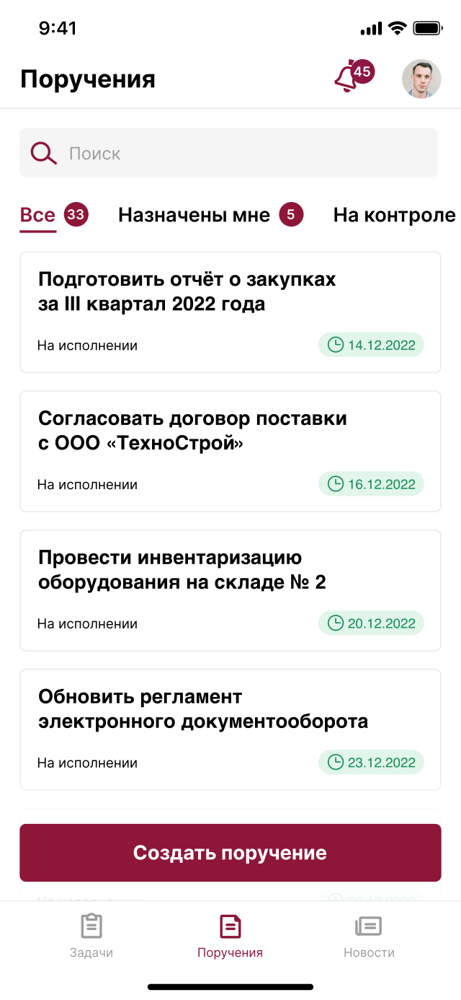
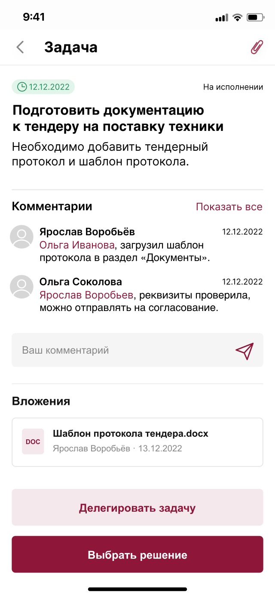

Мобильное приложение AVC
Корпоративное приложение для iOS: задачи и поручения, участники, решения, обсуждения и документы в одном рабочем сценарии.



Рабочие процессы команды — в мобильном приложении
- Моя роль
- UX/UI-дизайнер
- Масштаб работы
- Сценарии задач и поручений, взаимодействие участников, комментарии и вложения. Интерфейс для iOS.
Контекст проекта
AVC — корпоративное приложение для работы с задачами и поручениями. Сотрудник видит, что ему назначено, открывает материалы, обсуждает детали с коллегами и фиксирует решение. Руководитель следит за исполнением и распределяет работу между участниками.
Моя задача — связать эти действия в последовательные мобильные сценарии. Важно сохранить деловой контекст: кто отвечает за задачу, когда её нужно выполнить, какие документы относятся к ней и что происходит после принятого решения.
Задачи и поручения
Прорабатывала списки и подробные карточки задач и поручений: содержание, срок, статус исполнения, участников и доступные действия. В реестрах предусмотрены разделы «Все», «Назначены мне» и «На контроле», счётчики и индикаторы исполнения.
В карточке основной смысл задачи отделён от обсуждения, проекта и связанных данных. Для длинных описаний и комментариев предусмотрены отдельные состояния: экран должен оставаться понятным и при коротком поручении, и при объёмной рабочей переписке.
Создание и распределение работы
Проектировала создание новой задачи, выбор исполнителя и нескольких соисполнителей, а также делегирование. Эти сценарии требуют понятного перехода от содержания задачи к выбору людей и подтверждению действия.
Для поручений проработаны просмотр подчинённых поручений и переходы к связанным задачам. Так пользователь сохраняет связь между общей работой и отдельными действиями участников.
Решение и завершение
Проработала последовательность завершения задачи и поручения: открытие выбора решения, выбранный вариант, ввод комментария и подтверждение. Отдельно учла состояние, в котором комментарий обязателен.
Основное действие меняется вместе с этапом работы. Важно, чтобы сотрудник понимал, что именно он подтверждает и каких данных ещё не хватает для завершения.
Комментарии в контексте задачи
Спроектировала краткий блок комментариев в карточке и отдельный экран всей переписки. В сообщениях видны автор, адресат и время; упоминания выделены цветом, чтобы легче считывать, к кому обращаются коллеги.
Для длинной переписки проработала прокрутку и расположение поля ввода у нижнего края. Пользователь может прочитать историю и ответить, сохраняя контекст задачи.
Вложения и вложенные папки
Разработала навигацию по материалам задачи: список папок и файлов, переход во вложенную папку и возврат на предыдущий уровень. Папки отличаются от документов иконкой и количеством элементов, у файла показаны название, формат и размер.
Учла длинные названия документов и несколько уровней вложенности. Это позволяет работать с техническими, финансовыми и закрывающими документами через один знакомый сценарий.
Интерфейс по гайдлайнам iOS
При проектировании следовала Apple Human Interface Guidelines: использовала привычную структуру навигации с возвратом, учитывала безопасные зоны экрана и область системного индикатора, отделяла содержание от основных действий.
Выбор решения и другие контекстные действия оформляла так, чтобы они воспринимались последовательно с остальным интерфейсом iOS. Фирменный бордовый цвет задаёт акцент, а иерархия заголовков, разделителей и элементов управления помогает ориентироваться в рабочей информации.
Проработка состояний
Макеты описывают не только основной путь, но и варианты поведения: разные индикаторы исполнения, длинный текст, несколько соисполнителей, обязательный комментарий, выбранное решение и завершение. Такая детализация связывает отдельные экраны в рабочую логику приложения.